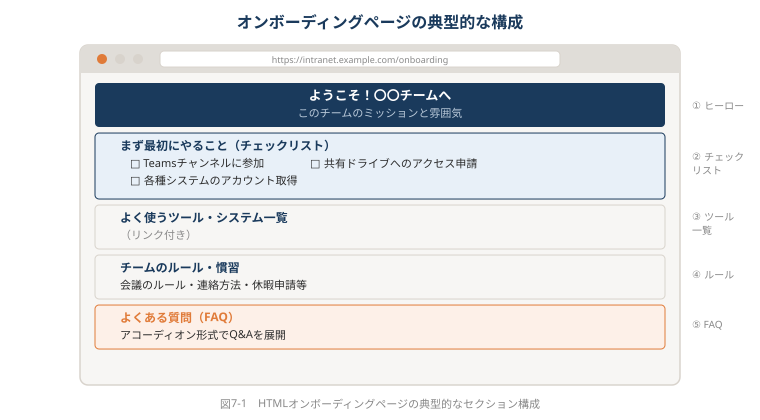
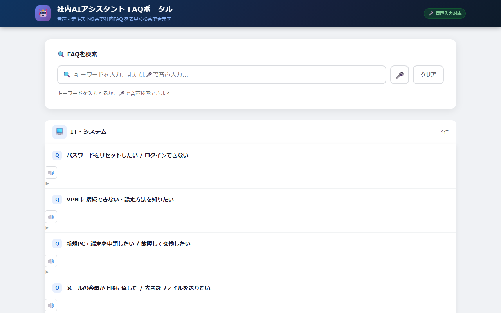

第7章 社内ポータル・ナレッジ共有・説明ページをHTMLで作る
本章のサンプルファイル:ch07_voice_portal.html
ブラウザで開くと、本章で解説するHTMLコンテンツを実際に操作できます。
本書サポートサイトからダウンロードしてください。
本章を読む前に
あなたのチームに、こんなことはありませんか。
「新しいメンバーが入るたびに、同じ質問を何度も受ける」「どこかにまとめてあるはずだけど、どこにあるかわからない」「更新したマニュアルを全員に配るのが面倒で、結局古い版が使われている」
情報共有の問題は、多くの職場で慢性的な悩みです。ツールを導入しても、運用が続かない。最初は頑張って整備しても、やがて誰も更新しなくなる。情報は古くなり、読まれなくなる。
この章では、そうした「社内情報共有の問題」に対して、HTMLというアプローチがどんな解決策になり得るかを考えていきます。
7-1 社内情報共有の現状と課題
「どこにある？」問題——情報が分散する職場
「あの資料、どこにありましたっけ？」
この質問を、あなたは今週何回聞きましたか。あるいは何回答えましたか。
現代の職場では、情報が複数の場所に分散して存在しています。Teamsのチャンネルに流れたメッセージ、SharePointのどこかにあるフォルダ、社内wikiに誰かが書いたページ、古いメール、共有ドライブの深いフォルダ、誰かのPC上のローカルファイル——それぞれのツールに、それぞれの情報が散在しています。
問題は「ツールが多すぎること」ではありません。むしろ根本的な問題は、「情報が届く設計になっていないこと」です。
ファイルを共有ドライブに置いても、見つけられなければ存在しないも同然です。Teamsに投稿しても、流れてしまえば誰も見返しません。wikiにまとめても、誰もそのURLを知らなければ読まれません。
特に新入社員にとって、この「情報の迷路」は深刻です。「社内ルールを教えてほしい」「業務手順を確認したい」「誰に聞けばいい？」——こうした基本的な問いに対して、多くの組織では「詳しい人に聞く」しか方法がありません。その結果、詳しい人の時間が奪われ続けます。
更新されないwiki、読まれないマニュアル
「うちにもwikiはあります。でも誰も更新しないし、誰も読まない」
社内情報共有ツールが形骸化する光景は、どの業界でも見られます。なぜそうなるのでしょうか。
理由はいくつかあります。まず「書く場所」と「読む場所」が一致していない問題です。Confluenceに書かれた手順書も、業務中に参照するのはTeams経由というケースが多く、「どこに書いてあったか」が定着しません。
次に、更新が「誰かがやる仕事」になっていないことです。最初に熱心に書いた担当者が異動してしまうと、更新する人がいなくなります。情報は腐っていき、誰かが「これ古いな」と気づいても、更新する権限と意欲がなければ放置されます。
そして最も本質的な問題として、「情報のアーキテクチャ」が設計されていないことがあります。wikiは「書けば貯まる」道具ですが、「読む人が何を必要としているか」から逆算して設計されていなければ、貯まるほど混沌とします。
HTMLページがすべてを解決するわけではありませんが、「誰かのために、特定の目的で作られた1ページ」という単位で情報を整理する習慣は、上記の問題を解消するひとつの答えになります。URLひとつで届く、常に最新版が見られる、検索できる——そうした特性が、社内情報共有の慢性的な問題を和らげます。
7-2 チームのためのHTMLページを作る
あなたのチームに「入口」はありますか？
唐突な問いかけですが、あなたのチームには「このページを見れば、チームのことが一通りわかる」という場所がありますか？
メンバー全員の名前・役割・連絡先。進行中のプロジェクトの状況。よく使うツールやシステムのリンク。チームのルールや慣習。——こうした情報が1ページにまとまっていれば、新しいメンバーが加わるたびに長時間のオリエンテーションをする必要がありません。他部署の方がコラボする際にも、「まずこれを見てください」とURLひとつ送れば済みます。
これが「チームダッシュボード」という発想です。
「チームダッシュボード」という発想
プロジェクトチームや部署のためのHTMLページを作るとき、まず考えるべきは「誰が何のために見るか」です。
典型的なチームダッシュボードには、次のような要素が入ります。
- チーム概要：チームの役割・ミッション・主な業務
- メンバーリスト：氏名・役割・専門領域・連絡先（もしくはTeamsアカウントへのリンク）
- プロジェクト一覧：現在進行中のプロジェクト名・ステータス・担当者
- リンク集：よく使うシステムのURL、共有フォルダへのリンク、Teamsチャンネルへのリンク
- 重要なお知らせ：変更事項、締め切り、注意点
これを毎回PowerPointで作ってメール送信していたとしたら、「最新版はどこ？」問題は永遠に解決しません。しかしHTMLにしてURLを固定してしまえば、更新するたびに全員の手元に最新版が届きます。
以下は、チームダッシュボードの基本的なHTMLの骨格です。生成AIに「チームダッシュボードページを作ってください。メンバーリスト・進行中プロジェクト・よく使うリンク集を含む構成で」と依頼すれば、このようなコードが生成されます。
<!DOCTYPE html>
<html lang="ja">
<head>
<meta charset="UTF-8">
<meta name="viewport" content="width=device-width, initial-scale=1.0">
<title>〇〇チーム ホームページ</title>
<style>
body {
font-family: 'Segoe UI', sans-serif;
margin: 0;
background: #f5f7fa;
color: #333;
}
header {
background: #1a56a0;
color: white;
padding: 24px 40px;
}
header h1 { margin: 0; font-size: 1.8rem; }
header p { margin: 4px 0 0; opacity: 0.8; }
.container {
max-width: 1100px;
margin: 32px auto;
padding: 0 24px;
display: grid;
grid-template-columns: 280px 1fr;
gap: 24px;
}
/* カード共通 */
.card {
background: white;
border-radius: 8px;
padding: 24px;
box-shadow: 0 1px 4px rgba(0,0,0,.08);
}
.card h2 {
margin: 0 0 16px;
font-size: 1rem;
color: #1a56a0;
border-bottom: 2px solid #e5eaf2;
padding-bottom: 8px;
}
/* メンバーリスト */
.member {
display: flex;
align-items: center;
gap: 12px;
padding: 8px 0;
border-bottom: 1px solid #f0f0f0;
}
.member:last-child { border-bottom: none; }
.avatar {
width: 40px; height: 40px;
border-radius: 50%;
background: #d0e2f7;
display: flex; align-items: center; justify-content: center;
font-weight: bold; color: #1a56a0; font-size: 0.9rem;
}
.member-info .name { font-weight: bold; font-size: 0.9rem; }
.member-info .role { font-size: 0.8rem; color: #777; }
/* プロジェクト一覧 */
.project-item {
padding: 12px 0;
border-bottom: 1px solid #f0f0f0;
}
.project-item:last-child { border-bottom: none; }
.project-title { font-weight: bold; font-size: 0.9rem; }
.status-badge {
display: inline-block;
font-size: 0.75rem;
padding: 2px 8px;
border-radius: 12px;
margin-left: 8px;
}
.status-active { background: #d4edda; color: #155724; }
.status-review { background: #fff3cd; color: #856404; }
.status-complete { background: #e2e3e5; color: #383d41; }
/* リンク集 */
.link-grid {
display: grid;
grid-template-columns: 1fr 1fr;
gap: 8px;
}
.link-grid a {
display: block;
padding: 10px 12px;
background: #f0f4ff;
border-radius: 6px;
text-decoration: none;
color: #1a56a0;
font-size: 0.85rem;
transition: background 0.2s;
}
.link-grid a:hover { background: #d0e2f7; }
/* 右エリアのグリッド */
.right-area { display: flex; flex-direction: column; gap: 24px; }
</style>
</head>
<body>
<header>
<h1>〇〇チーム ホームページ</h1>
<p>最終更新：2025年6月15日 ｜ 更新担当：田中</p>
</header>
<div class="container">
<!-- 左カラム：メンバーリスト -->
<aside>
<div class="card">
<h2>メンバー</h2>
<div class="member">
<div class="avatar">田</div>
<div class="member-info">
<div class="name">田中 一郎</div>
<div class="role">チームリーダー</div>
</div>
</div>
<div class="member">
<div class="avatar">鈴</div>
<div class="member-info">
<div class="name">鈴木 花子</div>
<div class="role">プロジェクト管理</div>
</div>
</div>
<div class="member">
<div class="avatar">佐</div>
<div class="member-info">
<div class="name">佐藤 健</div>
<div class="role">データ分析</div>
</div>
</div>
<div class="member">
<div class="avatar">山</div>
<div class="member-info">
<div class="name">山田 美咲</div>
<div class="role">コンテンツ担当</div>
</div>
</div>
</div>
</aside>
<!-- 右エリア -->
<div class="right-area">
<!-- プロジェクト一覧 -->
<div class="card">
<h2>進行中のプロジェクト</h2>
<div class="project-item">
<span class="project-title">新CRMシステム導入</span>
<span class="status-badge status-active">進行中</span>
<div style="font-size:0.8rem;color:#777;margin-top:4px;">担当：田中・鈴木 完了予定：2025年9月</div>
</div>
<div class="project-item">
<span class="project-title">四半期業務報告書</span>
<span class="status-badge status-review">レビュー中</span>
<div style="font-size:0.8rem;color:#777;margin-top:4px;">担当：佐藤 提出期限：2025年6月30日</div>
</div>
<div class="project-item">
<span class="project-title">社内研修コンテンツ整備</span>
<span class="status-badge status-complete">完了</span>
<div style="font-size:0.8rem;color:#777;margin-top:4px;">担当：山田 完了日：2025年5月</div>
</div>
</div>
<!-- リンク集 -->
<div class="card">
<h2>よく使うリンク</h2>
<div class="link-grid">
<a href="#">共有ドライブ</a>
<a href="#">Teams チャンネル</a>
<a href="#">チーム共有カレンダー</a>
<a href="#">経費精算システム</a>
<a href="#">議事録フォルダ</a>
<a href="#">ITヘルプデスク</a>
</div>
</div>
</div>
</div>
</body>
</html>このコードを見て「複雑すぎる」と感じた方も、安心してください。このコードはすべて生成AIに作成してもらったものです。あなたがすべきことは、「何を表示したいか」を言葉で伝えることだけです。メンバーの名前・役割の情報をプロンプトに含めて「チームホームページを作ってください」と依頼すれば、このようなページが出力されます。
ポイントは、このページを作ったらURL（ファイルのパス）をSlackやTeamsでチーム全員に共有し、ブックマークしてもらうことです。「このページが常に最新のチーム情報の入口です」と定義してしまえば、自然と参照されるようになります。
💡 AIへの依頼例
【目的】チームのホームページ（ダッシュボード）を作りたい
【含める要素】ヘッダーにチーム名と最終更新日、左カラムにメンバーリスト（氏名・役職・アイコン）、右エリアに進行中プロジェクト一覧（ステータスバッジ付き）とよく使うリンク集（グリッド表示）
【スタイル】コーポレートブルー系、白背景カード、2カラムレイアウト、スマートフォン対応
【出力形式】完全なHTMLファイルとして出力してください（外部ライブラリ不使用）
このプロンプトをそのままClaude/ChatGPT/Geminiに貼り付けて使えます。
オンボーディングページをHTMLで作る
新しいメンバーが加わるとき、あなたのチームでは何をしていますか。口頭で説明する、メールでリンクを送る、Teamsで「よろしくお願いします」と投稿する——その都度説明する時間と、新人が「覚えられなかった」と感じる不安が生まれています。
オンボーディングページとは、「ようこそ、こんなチームです。まずこれを読んでください」という情報を一枚のHTMLページにまとめたものです。
典型的な構成はこうです。
┌─────────────────────────────────────┐
│ ようこそ！〇〇チームへ │
│ このチームのミッションと雰囲気 │
├─────────────────────────────────────┤
│ まず最初にやること（チェックリスト） │
│ □ Teamsチャンネルに参加 │
│ □ 共有ドライブへのアクセス申請 │
│ □ 各種システムのアカウント取得 │
├─────────────────────────────────────┤
│ よく使うツール・システム一覧 │
│ (リンク付き) │
├─────────────────────────────────────┤
│ チームのルール・慣習 │
│ (会議のルール・連絡方法・休暇申請等) │
├─────────────────────────────────────┤
│ よくある質問（FAQ） │
└─────────────────────────────────────┘
このようなページをHTMLで用意しておくと、新人が入るたびに「URLを送るだけ」で基本情報の伝達が完了します。もちろん、人と話す時間は大切ですが、「説明し忘れた」「言ったけど覚えていなかった」という問題が大幅に減ります。
さらに重要なのは、このページは更新できるということです。組織改編で連絡先が変わっても、システムのURLが変わっても、ページを更新するだけで全員の手元の情報が最新になります。「古いマニュアルを印刷して配ってしまった」という問題が起きません。
FAQページ・ナレッジページの構築
「同じ質問を何度も受ける」という経験は、どの職場でもあります。人事部なら「有給休暇の申請方法は？」「育休の取り方は？」、IT部門なら「パスワードを忘れた場合は？」「新しいPCのセットアップ手順は？」——こうした繰り返し発生する質問に、毎回丁寧に答える時間は無駄とは言い切れませんが、その時間をより創造的な仕事に使えるとしたら、チームの生産性は上がります。
FAQページをHTMLで作ることの最大のメリットは、アコーディオン形式のUI（ユーザーインターフェース）です。アコーディオンとは、「質問が最初は折りたたまれていて、クリックすると回答が展開される」という表示形式のことです（実際にはWebサイトでよく見かける「▶ クリックで開く」のあの表示です）。
アコーディオン形式のFAQページが便利な理由は、「質問の一覧が見渡せる」という点にあります。回答が全部開いた状態だと、ページが長くなりすぎて「自分の知りたい答えはどこ？」と迷います。アコーディオンにすることで、まず質問一覧を見渡し、該当する質問を開いて確認するという使い方ができます。
以下は、アコーディオン形式のシンプルなFAQページのコードです。
<!DOCTYPE html>
<html lang="ja">
<head>
<meta charset="UTF-8">
<title>チームFAQ</title>
<style>
body {
font-family: 'Segoe UI', sans-serif;
max-width: 800px;
margin: 40px auto;
padding: 0 24px;
color: #333;
background: #f9f9f9;
}
h1 { color: #1a56a0; margin-bottom: 8px; }
.subtitle { color: #777; margin-bottom: 32px; }
details {
background: white;
border-radius: 8px;
margin-bottom: 8px;
box-shadow: 0 1px 3px rgba(0,0,0,.06);
overflow: hidden;
}
summary {
cursor: pointer;
padding: 16px 20px;
font-weight: 600;
font-size: 0.95rem;
list-style: none;
display: flex;
justify-content: space-between;
align-items: center;
}
summary::-webkit-details-marker { display: none; }
summary::after {
content: '＋';
color: #1a56a0;
font-size: 1.2rem;
transition: transform 0.2s;
}
details[open] summary::after {
content: '－';
}
.answer {
padding: 0 20px 16px;
font-size: 0.9rem;
line-height: 1.7;
color: #555;
border-top: 1px solid #f0f0f0;
}
.category {
font-size: 0.75rem;
font-weight: bold;
color: #1a56a0;
text-transform: uppercase;
margin: 24px 0 8px;
}
</style>
</head>
<body>
<h1>チームFAQ</h1>
<p class="subtitle">よくある質問をまとめました。質問をクリックすると回答が表示されます。</p>
<div class="category">入社・オンボーディング</div>
<details>
<summary>最初にやることは何ですか？</summary>
<div class="answer">
まず以下の手順を順番に進めてください。<br>
① Teamsの「〇〇チーム」チャンネルに参加する<br>
② 共有ドライブのアクセス申請（ITヘルプデスクへメール）<br>
③ 経費精算システムのアカウント取得<br>
不明点は田中（内線：1234）に連絡してください。
</div>
</details>
<details>
<summary>チームの定例会議はいつですか？</summary>
<div class="answer">
毎週月曜日 10:00〜10:30 にTeamsで実施しています。<br>
カレンダー招待は田中から送られますので、確認してください。
議事録は<a href="#">議事録フォルダ</a>に保存されています。
</div>
</details>
<div class="category">業務・申請</div>
<details>
<summary>経費精算の締め切りはいつですか？</summary>
<div class="answer">
毎月末日が締め切りです。翌月5日までに申請が完了していない場合は、
翌々月の精算になります。申請は<a href="#">経費精算システム</a>から行ってください。
</div>
</details>
<details>
<summary>有給休暇の申請方法を教えてください</summary>
<div class="answer">
休暇申請システム（社内ポータル→人事→休暇申請）から申請してください。
原則として3営業日前までの申請をお願いしています。
急な体調不良などの場合は、当日朝9時までに田中（Teams）へ連絡してください。
</div>
</details>
</body>
</html><details> と <summary> というHTMLタグを使っています。これはブラウザが標準で持っているアコーディオン機能で、JavaScriptを一切使わずに「クリックで開閉する」動作が実現できます。生成AIにこのコードの生成を依頼する際は、「アコーディオン形式のFAQページを作ってください。JavaScriptを使わずシンプルに実装してください」と指定すると、このようなコードが出力されます。
FAQページを運用するコツは、「質問が来たらFAQに追加する」という習慣を作ることです。誰かに同じ質問が来たら、その場で答えると同時に「FAQに追加しておきました。次回からここを見てください」とURLを伝えます。これを繰り返すことで、FAQページが育っていきます。
💡 AIへの依頼例
【目的】アコーディオン形式の社内FAQページを作りたい
【含める要素】カテゴリ別に質問をグループ化（入社・申請・システム・休暇）、各カテゴリ内の質問はクリックで開閉、ページ上部にキーワード検索ボックス（入力するとリアルタイムで質問を絞り込む）
【スタイル】シンプルな白背景、カテゴリヘッダーはグレー帯、開閉ボタンは＋／－アイコン
【出力形式】完全なHTMLファイルとして出力してください（JavaScriptは最小限で）
このプロンプトをそのままClaude/ChatGPT/Geminiに貼り付けて使えます。
7-3 説明ページ・案内ページを作る
「これ、何度説明したかわからない」という問題
あなたの職場に「これ何度説明したかわからない」という話題はありますか。
経費精算の手順、会議室の予約方法、有給休暇の申請フロー、IT機器の設定手順——こうした「知っていれば5分で終わることが、知らないと詰まってしまうこと」を、毎回誰かが説明しています。説明する側もされる側も、繰り返しには疲弊します。
このセクションでは、「WordやPDFで作って都度送る案内資料」をHTML化することで、どんなメリットが生まれるかを見ていきます。
社内制度・ルール・申請手順のHTML化
複雑な申請フローを説明するとき、Word文書よりもHTMLのステップ表示が有効な理由はシンプルです。「今どのステップにいるか」が視覚的にわかるからです。
例えば経費精算の手順をWordで書くと、こうなります。「まず領収書を保管し、経費精算システムにログインして申請書を作成します。申請書には日付・金額・用途を記入し、領収書の写真を添付して上長に申請します。上長が承認したら経理部に提出されます……」
同じ内容をHTMLのステップ形式で表現すると、各ステップが独立した視覚的なブロックになり、「Step 1 → Step 2 → Step 3」という流れが一目でわかります。さらに、各ステップに画像やリンクを添付することもできます。
以下は、ステップ形式の手順ページのコードサンプルです。
<!DOCTYPE html>
<html lang="ja">
<head>
<meta charset="UTF-8">
<title>経費精算 申請手順</title>
<style>
body {
font-family: 'Segoe UI', sans-serif;
max-width: 760px;
margin: 40px auto;
padding: 0 24px;
color: #333;
}
h1 { color: #1a56a0; }
.intro {
background: #e8f0fe;
border-left: 4px solid #1a56a0;
padding: 12px 16px;
border-radius: 4px;
margin-bottom: 32px;
font-size: 0.9rem;
}
/* ステップ全体のコンテナ */
.steps { position: relative; }
/* 縦線（タイムライン） */
.steps::before {
content: '';
position: absolute;
left: 28px;
top: 8px;
bottom: 8px;
width: 2px;
background: #d0e2f7;
}
/* 各ステップ */
.step {
display: flex;
gap: 20px;
margin-bottom: 28px;
position: relative;
}
.step-number {
flex-shrink: 0;
width: 56px;
height: 56px;
background: #1a56a0;
color: white;
border-radius: 50%;
display: flex;
align-items: center;
justify-content: center;
font-weight: bold;
font-size: 1.1rem;
z-index: 1;
}
.step-content {
background: white;
border: 1px solid #e0e8f4;
border-radius: 8px;
padding: 16px 20px;
flex: 1;
}
.step-content h3 {
margin: 0 0 8px;
color: #1a56a0;
font-size: 1rem;
}
.step-content p {
margin: 0;
font-size: 0.9rem;
line-height: 1.7;
color: #555;
}
.step-content .tip {
margin-top: 8px;
font-size: 0.8rem;
background: #fffbea;
border-left: 3px solid #f0b429;
padding: 6px 10px;
border-radius: 2px;
}
.step-content a {
color: #1a56a0;
}
/* 完了メッセージ */
.complete {
background: #d4edda;
border-radius: 8px;
padding: 16px 20px;
text-align: center;
color: #155724;
font-weight: bold;
}
</style>
</head>
<body>
<h1>経費精算 申請手順</h1>
<div class="intro">
申請の締め切りは<strong>毎月末日</strong>です。
不明な点は経理部（内線：2000）または
<a href="#">FAQ（よくある質問）</a>をご確認ください。
</div>
<div class="steps">
<div class="step">
<div class="step-number">1</div>
<div class="step-content">
<h3>領収書を保管する</h3>
<p>
経費が発生したら、必ず領収書を受け取り保管してください。
紙の領収書はスキャンまたはスマートフォンで撮影し、
デジタルデータとして保存することをお勧めします。
</p>
<div class="tip">レシートは宛名なしでも有効ですが、「上様」は避けて社名を記入してもらってください。</div>
</div>
</div>
<div class="step">
<div class="step-number">2</div>
<div class="step-content">
<h3>経費精算システムにログインする</h3>
<p>
<a href="#">経費精算システム（社内ポータル経由）</a>にアクセスし、
社員番号とパスワードでログインしてください。
初回ログインの方は「新規登録」から手続きしてください。
</p>
<div class="tip">スマートフォンからも申請できます。外出先での申請に便利です。</div>
</div>
</div>
<div class="step">
<div class="step-number">3</div>
<div class="step-content">
<h3>申請書を作成・提出する</h3>
<p>
「新規申請」ボタンをクリックし、日付・金額・用途・支払い先を入力してください。
領収書のデータを添付し、「上長に申請」ボタンで提出します。
</p>
</div>
</div>
<div class="step">
<div class="step-number">4</div>
<div class="step-content">
<h3>上長の承認を待つ</h3>
<p>
申請後、上長にメール通知が届きます。通常1〜3営業日以内に承認・差し戻しの通知が届きます。
差し戻しの場合はコメントを確認し、修正して再申請してください。
</p>
</div>
</div>
<div class="step">
<div class="step-number">5</div>
<div class="step-content">
<h3>経理部への提出（月末締め）</h3>
<p>
上長の承認後、システム上で自動的に経理部へ送付されます。
月末日までに承認が完了していれば、翌月25日に指定口座へ振り込まれます。
</p>
</div>
</div>
</div>
<div class="complete">
申請完了！振込は翌月25日です
</div>
</body>
</html>このHTMLを活用したある会社の経理部門では、「経費精算の手順を教えてほしい」という問い合わせが月20件以上あったのが、URLを社内wikiとTeamsに貼り付けてからほぼゼロになったという事例があります。質問された時間を集計すると、月に約3〜4時間に相当していました。
HTMLの手順ページが有効な理由は、問い合わせを「その場で答える行為」から「ページを見てもらう行為」に転換できることにあります。
💡 AIへの依頼例
【目的】タイムライン形式の申請手順ページを作りたい
【含める要素】5ステップのタイムライン表示（ステップ番号の円アイコン＋縦線でつなぐ）、各ステップに注意事項をオレンジの吹き出しで表示、完了後に緑色の「完了メッセージ」ボックス、ページ上部に締め切り日を目立つ形で表示
【スタイル】白背景カード、ステップ番号はブルー丸アイコン、注意事項は黄色背景
【出力形式】完全なHTMLファイルとして出力してください
このプロンプトをそのままClaude/ChatGPT/Geminiに貼り付けて使えます。
社内制度説明ページ——育休・資格支援制度など
人事部門が特に恩恵を受けやすいのが、社内制度の説明ページです。
育児休業の手続き、介護休業の申請フロー、資格取得支援制度の使い方——こうした制度は複雑で、かつ「いざ使う場面になって初めて調べる」ケースが多いです。制度説明のWordファイルやPDFは作っても、「最新版がどこにあるか」「法改正で内容が変わったのに更新されていない」という問題が頻発します。
HTMLで制度説明ページを作ると：
- フローチャートで手続きの全体像を見せられる：「誰がいつ何をするか」が一目でわかります
- よくある質問をアコーディオンで追加し続けられる：「これは対象になりますか？」という質問が来るたびにFAQを追加できます
- 法改正や制度変更があったら、ページを更新するだけ：全員に新しいバージョンのファイルを配布する必要がありません
イベント・研修案内ページ
WordやPowerPointで作った案内文をPDFにしてメールに添付する——これが多くの社内イベント案内の現状です。しかしこの方法には問題があります。案内文の情報を更新したら新しいPDFを再度配布しなければならず、「最初にもらったメールの添付ファイルに記載してある会場が変わりました」というような状況が起きます。
イベント案内ページをHTMLで作るメリットは単純です。URLを一度共有してしまえば、内容を更新しても参加者全員に最新情報が届くということです。
また、HTMLのイベントページは視覚的に整理された情報を提供できます。
- 日時・場所・参加方法を目立つカードで表示
- タイムテーブルを見やすい表で表示
- Googleフォームの申し込みフォームをページ内に埋め込む（
<iframe>タグを使うことで、ページを離れずに申し込みができます） - 地図をGoogleマップで埋め込む
「お知らせメール → PDF添付」という習慣を「お知らせメール → HTMLページのURL共有」に変えるだけで、後から情報が変わっても慌てずに済みます。
7-4 HTMLの共有・公開・管理
HTMLページをどこに置けばいいか
HTMLページを作っても、「どこに置けばチームが見られるか」という問題があります。企業のIT環境はさまざまなので、ここでは現実的な選択肢を整理します。
選択肢1：SharePointに置く
多くの企業でMicrosoft 365が導入されており、SharePointにファイルを置けばURLで共有できます。HTMLファイルをSharePointのドキュメントライブラリに置き、「共有」でリンクを取得してチームに配布する方法です。最もハードルが低い選択肢です。
ただしSharePointではHTMLファイルがブラウザで直接表示されず、ダウンロードを促されることがあります。IT部門の設定によってはうまく動作しないため、事前確認が必要です。
選択肢2：社内ファイルサーバー（イントラネット）
社内ネットワーク上にウェブサーバーが立っている場合は、そこにHTMLファイルをアップロードすることで、社内からアクセスできるURLが発行されます。IT部門に相談すると、「社内公開用の領域」を割り当ててもらえることが多いです。
選択肢3：GitHub Pages（外部公開が許可される場合）
GitHub Pages（ギットハブ・ページズ）は、GitHubが提供する無料のホスティングサービスです。「ホスティング」とは、ウェブページをインターネット上に公開するための場所のことです。パブリックなリポジトリにHTMLファイルを置くだけで、無料でURLが発行されます。社外にも公開できるため、顧客向けの案内ページや採用説明ページなどに活用できます。
ITリテラシーが高いメンバーがいれば、GitHub Pagesのセットアップは20〜30分程度でできます。操作手順を生成AIに聞きながら進めれば、コマンドライン（文字入力でPCを操作する画面）の知識がなくても設定できます。
選択肢4：Notion・Confluenceなどの既存ツールに「HTML埋め込み」
NotionやConfluenceは、HTMLを直接作成するツールではありませんが、一部のHTMLコンテンツを埋め込む機能があります。完全なHTMLページを作成するには向きませんが、既存のツールの中に「HTMLのピース」を埋め込む用途ならうまく活用できます。
| 選択肢 | 難易度 | コスト | 社外公開 | 向いている用途 |
|---|---|---|---|---|
| SharePoint | 低 | 無料（既存） | 不可（設定次第） | 社内向けポータル |
| 社内ファイルサーバー | 中 | 無料（IT部門対応） | 不可 | 社内向け公式ページ |
| GitHub Pages | 中 | 無料 | 可 | 外部公開・採用・顧客向け |
| Notion埋め込み | 低 | Notionのプラン次第 | Notionの設定次第 | 既存Notion活用 |
URLで共有するという文化を作る
「HTMLページを作ったからといって、誰もURLを使わなかった」という失敗は、技術の問題ではなく文化の問題です。
URLで共有する文化を育てるには、小さな積み重ねが有効です。
具体的なアクション：
- 最初の一歩は自分が使うこと：「このFAQを見てください」と口頭で伝えるのではなく、URLをTeamsやSlackに貼って伝える習慣を自分から始めます。
- 「このページに情報がある」と明示する：「詳しくはこちら」ではなく「詳しくは [チームFAQのURL] に記載しています」とURLを明示します。人はリンクがあれば開く可能性が高まります。
- ブックマークしてもらう：重要なページは「ブックマーク登録をお願いします」と一言添えて共有します。ブックマークされると、毎回URLを聞かずに済むようになります。
- 「メールへのファイル添付」を「URLへの誘導」に置き換える：案内文書をPDF添付する代わりに「詳細はこちら：[URL]」に変えます。一回試すと「こっちのほうが楽」と気づきます。
メンテナンスと更新の継続性
HTMLページは作って終わりではありません。情報が古くなったページは「ある方が混乱を招く」状態になります。FAQに書かれた連絡先の担当者がすでに異動済み、リンクが切れている、手順が変わっているのに古いまま——これでは誰も信頼して参照できなくなります。
メンテナンスを継続するための設計として、以下のポイントを押さえておきましょう。
オーナーを明確にする：各HTMLページに「更新担当者名と最終更新日」を表示することで、「誰が管理しているページか」が明確になります。ページの下部に「このページの管理者：田中 / 最終更新：2025年6月」と記載するだけです。
更新サイクルを定める：「四半期に一度、内容を確認して更新する」というルールを作ることで、放置を防げます。カレンダーにリマインダーを設定しておくと忘れません。
更新コストを下げる設計をする：情報が頻繁に変わる部分（担当者名・電話番号など）はページの目立つ場所に集約し、コードの中でも変更しやすい位置に書いておくと更新が楽になります。
7-5 音声でアクセスできるFAQページ
音声入力と読み上げを使ったFAQポータルも、HTMLとWeb Speech APIで実現できます。マイクボタンを押して「有給の申請方法は？」と話しかけると、該当するFAQが表示され、そのまま「読み上げ」ボタンで音声で答えを聞くことができます。
この機能は特に以下の場面で効果的です：
- 両手がふさがっている作業中（倉庫作業、調理など）
- 文字を読むのが難しい状況での情報アクセス
- 高齢者・視覚弱者向け社内資料
生成AIへの依頼でこのような音声対応ページも作れます：
💡 AIへの依頼例
【目的】音声入力・音声読み上げ対応の社内FAQポータルを作りたい
【含める要素】マイクボタンを押すと音声認識が起動してキーワードをテキスト化、入力キーワードに一致するFAQを自動表示、「読み上げ」ボタンで回答をWeb Speech API（SpeechSynthesis）で音声再生、キーボード入力でも検索できるテキストボックスを併設
【スタイル】大きなマイクアイコン、録音中はボタンが赤く点滅、回答エリアは白背景カードで見やすく
【出力形式】完全なHTMLファイルとして出力してください（Web Speech APIを使用、外部ライブラリ不要）
このプロンプトをそのままClaude/ChatGPT/Geminiに貼り付けて使えます。
Web Speech APIはChromeやEdgeで広くサポートされており、社内環境でも追加インストール不要ですぐに使えます。「テキストを読む」という行為そのものが難しい場面において、HTMLページの可能性を大きく広げる技術のひとつです。

ch07_voice_portal.html
本書サポートサイトよりダウンロードし、ブラウザで開いてご確認ください。
まとめ
本章では、社内情報共有の慢性的な課題に対して、HTMLページというアプローチがどう機能するかを見てきました。
社内ポータル・ナレッジ共有・説明ページをHTMLで作ることの本質的な価値は、次の3点に集約されます。
- URLひとつで常に最新の情報が届く：ファイルを「配布する」時代から、ページを「参照する」時代へ。更新するたびに配布し直す手間がなくなります。
- 情報の入口が設計できる：チームダッシュボード・オンボーディングページ・FAQ——それぞれの目的に合わせた「情報の入口」を設計することで、「どこにある？」という質問が減ります。
- 問い合わせを自己解決に転換できる：ステップ形式の手順ページ、アコーディオンFAQなど、人に聞くより先にページで解決できる仕組みを作ることで、チームの時間が解放されます。
あなたのチームで、誰かに聞かなければわからないことが1ページにまとまっていたら、チームの時間がどれだけ節約されるでしょうか。
技術の話ではなく、情報設計の話です。生成AIを使えばHTMLの実装は誰でもできます。問題は、「誰に向けて、何を、どこに置くか」を設計できるかどうかです。
コラム：読まれるwikiと読まれないwikiの差
「うちのwikiは誰も更新しない」という声はどこの会社でも聞きます。しかしこれはwikiというツールの問題ではなく、「情報のアーキテクチャ」の問題です。
読まれないwikiには共通する特徴があります。「誰が読むか」を想定せずに書かれている、情報がフラットに並んでいてどこから読めばいいか分からない、更新する人が決まっていない——の3点です。
HTMLページがすべての解決策になるとは言いませんが、「特定の人が特定の目的で読む1ページ」として作られたHTMLのページは、読まれやすい構造を持ちやすいです。なぜなら、1ページを作るとき、作る側は「誰が読むか」を必ず意識するからです。全員が雑多に書き足せるwikiと、「このページはオンボーディング用」と設計されたHTMLページでは、読み手の体験が根本的に違います。
第7章では、社内情報共有という実務的な課題に対して、HTMLページを「情報のインフラ」として使うアプローチを学びました。
最終章となる第8章では、これまでの内容を踏まえて、一段上の視点——「HTMLネイティブな思考プロセスを仕事に組み込む」というマインドセットの話に移ります。ツールの使い方ではなく、成果物の形式を問い直す習慣をいかに日常の仕事に埋め込むか。チームへの広げ方、OfficeとHTMLの共存の設計、そしてこれからのビジネスパーソンに求められるリテラシーとは何か——を考えていきましょう。